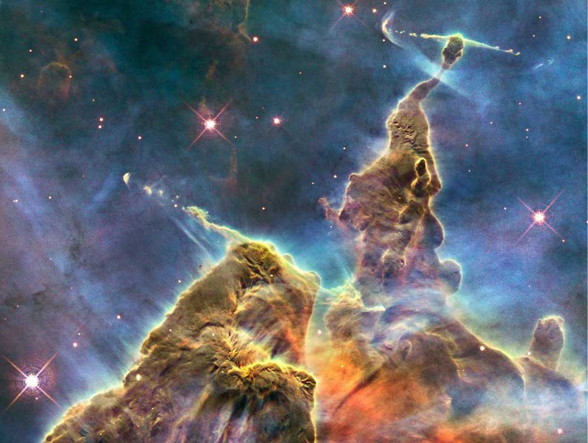
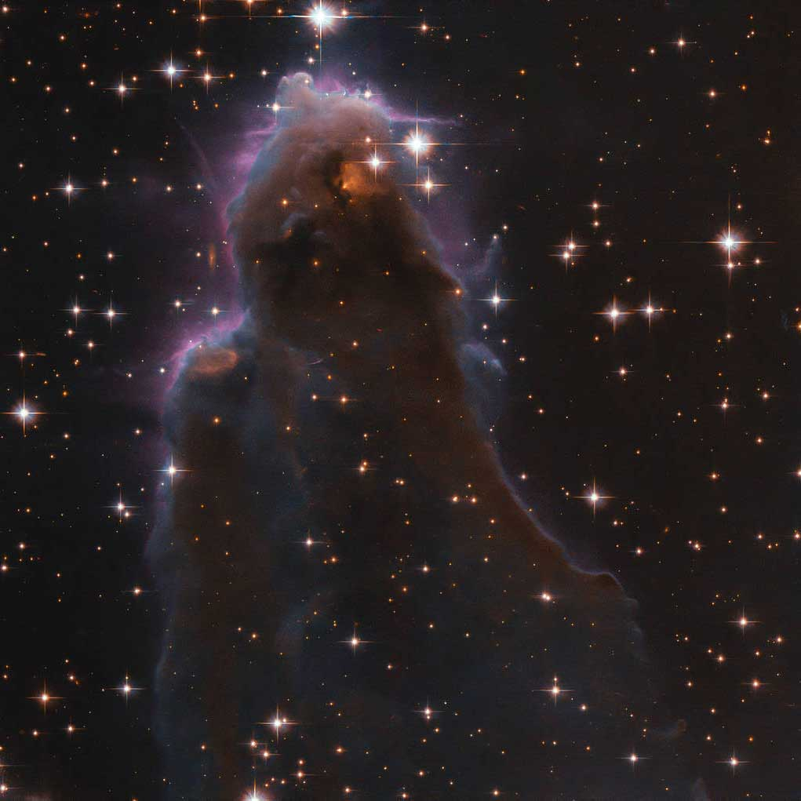

The first picture taken from the Hubble Telescope in May 1990 was compared to a picture taken of the same region of the sky from Las Campanas Observaroty in Chile.
You see clearly that the telescope’s resolution was much better than the group based observatories.
Resource: https://www.nasa.gov/content/hubbles-first-light

Hubble Telescope has found evidence that there is a massive black hole in the center of the elliptical galaxy M87. This galaxy is located 50 million light-years from earth.
There were observations which supported this idea for the exitence of gravitationally collapsed objects. Albert Einstein’s theory of relativity for instance, supported this heavily.
A massive black hole is so enormous and compact that nothing can escape - not even light.
Resource: https://hubblesite.org/contents/news-releases/1994/news-1994-23.html
After a huge maintenance service on the Hubble Telescope, the image quality was improved. The new infrared vision could now capture the Orion Nebula, which is the nearest nursery for massive stars.
Hubble’s infrared camera reveals a chaotic and active star birth region. The stars and the glowing interstellar dust, heated by and scattering the intense starlight, appear yellow-orange.
Resource: https://hubblesite.org/contents/news-releases/1997/news-1997-13.html
A dull star suddenaly became a several houndred times more luminous than our sun. The was by that time the brightest stars in the milky way.
This star, called the V838 Monocerotis have since then faded back to its regular state.
The phenomenon was called a «light echo». These details promise to prove astronomers with a CAT-scan-like probe of the 3D structure of shell of dust surrounding an aging star.
Resource: https://hubblesite.org/contents/news-releases/2003/news-2003-10.html
Hot gasses detected by Chandra in X-rays is seen as two pink clumps in the image and contains most of the «normal» matter in the two clusters. The dark matter and the normal matter must have been wrenched apart by the enormous collision of two large clusters of galaxies.
An optical image from Magellan and the Hubble Space Telescope shows the galaxies in orange and white.
Resource: https://hubblesite.org/contents/news-releases/2006/news-2006-39.html

Crab nebula’s beating heart is the most historic and intensively studied remnants of a supernova. The inner region sends out charged particles embedded in magnetic fields.
Our sun has the same mass as the neutron star at very center of the Crab Nebula.It’s copreddes into an incredibly dense sphere that’s only a few miles across.
The centre spins 30 times a second, so the neutron shoots ou detectable beams of energy and makes illusions of the neutron is pulsating.
Resource: https://www.nasa.gov/feature/goddard/2016/nasas-hubble-captures-the-beating-heart-of-the-crab-nebula
The Hubble Telescope captured in 2018 this beautiful image of the heart of the Milky Way galaxy.
The older red giant stars live alongside their many younger, white sun-like stars. This region of the galaxy is crowded with these. The blue stars are recently formed stars and are located in the foreground.
Astronomers studied 10,000 of these Sun-like stars in archival Hubble images over a nine-year period to unearth clues to our galaxy’s evolution.
The study revealed that the Milky Way’s bulge is a dynamic environment of variously aged stars zipping around at different speeds, like travelers bustling about a busy airport.
Resource: https://www.nasa.gov/image-feature/all-the-glittering-stars

Within the tempestuous Carina Nebula lies “Mystic Mountain.” This three-light-year-tall cosmic pinnacle, imaged by the Hubble Space Telescope’s Wide Field Camera 3, is made up primarily of dust and gas, and exhibits signs of intense star-forming activity. The colors in this composite image correspond to the glow of oxygen (blue), hydrogen and nitrogen (green) and sulfur (red).
Resource: https://www.nasa.gov/image-feature/carina-nebulas-mystic-mountain

This is a special glass of star-forming nursery known as free-floating evaporations gaseous globuses.
Energetic radiation ionize the cloud’s hydrogen and can crate a large hot bubble of ionized gas. This is how a massive new star starts to shine while its within the cool molecular gas cloud.
Resource: https://www.nasa.gov/image-feature/goddard/2020/hubble-snaps-a-special-stellar-nursery/